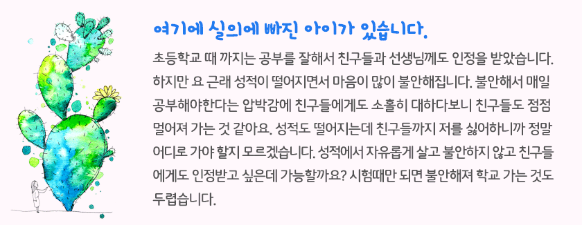

1회기 자녀 이해하기
2회기 자녀의 자율성 키우기
3회기 자녀와 갈등 해결하기
4회기 자녀의 힘을 북돋우기

4회기 자녀의 힘을 북돋우기
- 시작
하기 - 첫째
좌절극복사례 - 둘째
힘북돋아주기 - 셋째
장점찾기 - 정리
하기
어떻게 해야 할까요?
“괜찮아, 사는게 다 그런거지 뭐”
“그래도 나는 당신의 능력을 믿어요”
“그러니까 내 말을 듣지 그랬어, 앞으로 좀 조심하라고”
이제까지 살아오면서 삶이 힘들었을 때 이와 비슷한 경험을 해보셨을 거예요. 어떤 말을 하는지에 따라 힘이 되기도 하고 마음이 상하게 되기도 하지요. 다음의 이야기를 읽어보고 힘이 되는 말을 해주세요.
이제까지 살아오면서 삶이 힘들었을 때 이와 비슷한 경험을 해보셨을 거예요. 어떤 말을 하는지에 따라 힘이 되기도 하고 마음이 상하게 되기도 하지요. 다음의 이야기를 읽어보고 힘이 되는 말을 해주세요.

여기에 실의에 빠진 아이가 있습니다. 초등학교 때 까지는 공부를 잘해서 친구들과 선생님께도 인정을 받았습니다. 하지만 요 근래 성적이 떨어지면서 마음이 많이 불안해집니다. 불안해서 매일 공부해야한다는 압박감에 친구들에게도 소홀히 대하다보니 친구들도 점점 멀어져 가는 것 같아요. 성적도 떨어지는데 친구들까지 저를 싫어하니까 정말 어디로 가야 할지 모르겠습니다. 성적에서 자유롭게 살고 불안하지 않고 친구들에게도 인정받고 싶은데 가능할까요? 시험때만 되면 불안해져 학교 가는 것도 두렵습니다.
이 아이가 당신의 자녀라고 생각해보세요. 어떤 말이 이 아이에게 힘을 줄 수 있을까요?